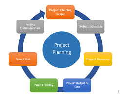

<p>
        Project Planning and Management focuses on organizing, monitoring, and delivering projects.  
        It emphasizes teamwork, scheduling, and resource optimization.  
        The subject prepares students for handling academic and professional projects.  
    </p>